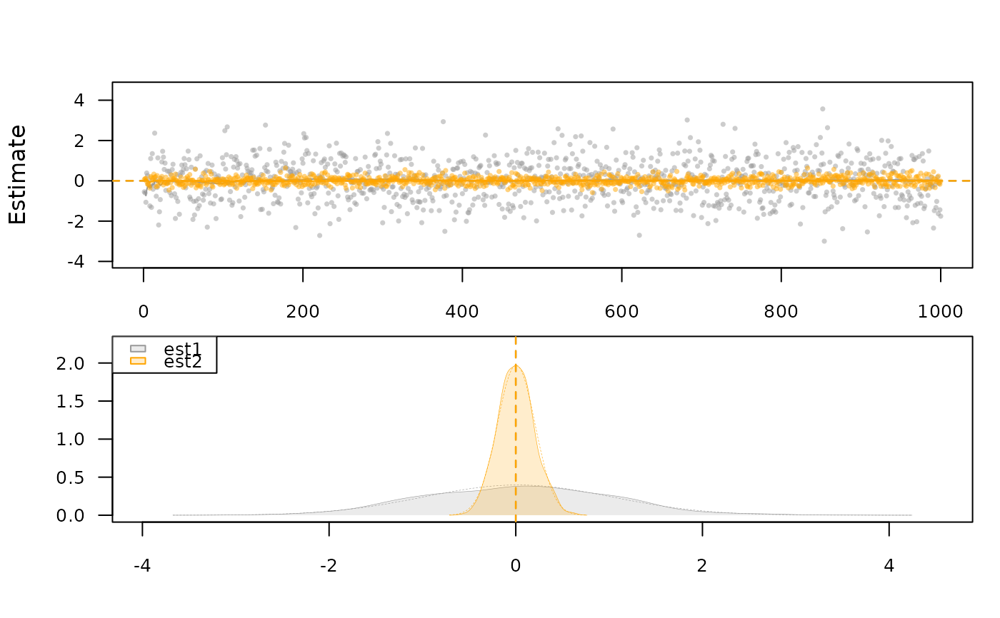
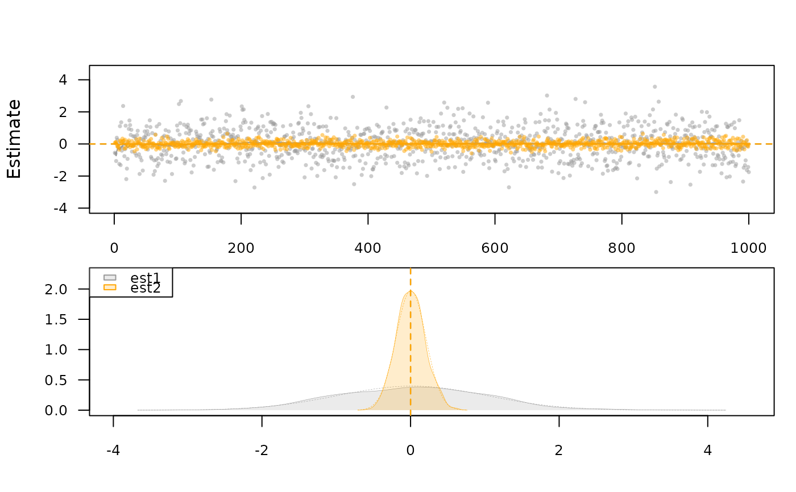

Density and scatter plots
# S3 method for sim
plot(
x,
estimate,
se = NULL,
true = NULL,
names = NULL,
auto.layout = TRUE,
byrow = FALSE,
type = "p",
ask = grDevices::dev.interactive(),
col = c("gray60", "orange", "darkblue", "seagreen", "darkred"),
pch = 16,
cex = 0.5,
lty = 1,
lwd = 0.3,
legend,
legendpos = "topleft",
cex.legend = 0.8,
plot.type = c("multiple", "single"),
polygon = TRUE,
density = 0,
angle = -45,
cex.axis = 0.8,
alpha = 0.2,
main,
cex.main = 1,
equal = FALSE,
delta = 1.15,
ylim = NULL,
xlim = NULL,
ylab = "",
xlab = "",
rug = FALSE,
rug.alpha = 0.5,
line.col = scatter.col,
line.lwd = 1,
line.lty = 1,
line.alpha = 1,
scatter.ylab = "Estimate",
scatter.ylim = NULL,
scatter.xlim = NULL,
scatter.alpha = 0.5,
scatter.col = col,
border = col,
true.lty = 2,
true.col = "gray70",
true.lwd = 1.2,
density.plot = TRUE,
scatter.plot = FALSE,
running.mean = scatter.plot,
...
)Arguments
- x
sim object
- estimate
columns with estimates
- se
columns with standard error estimates
- true
(optional) vector of true parameter values
- names
(optional) names of estimates
- auto.layout
Auto layout (default TRUE)
- byrow
Add new plots to layout by row
- type
plot type
- ask
if TRUE user is asked for input, before a new figure is drawn
- col
colour (for each estimate)
- pch
plot symbol
- cex
point size
- lty
line type
- lwd
line width
- legend
legend
- legendpos
legend position
- cex.legend
size of legend text
- plot.type
'single' or 'multiple' (default)
- polygon
if TRUE fill the density estimates with colour
- density
if non-zero add shading lines to polygon
- angle
shading lines angle of polygon
- cex.axis
Font size on axis
- alpha
Semi-transparent level (1: non-transparent, 0: full)
- main
Main title
- cex.main
Size of title font
- equal
Same x-axis and y-axis for all plots
- delta
Controls the amount of space around axis limits
- ylim
y-axis limits
- xlim
x-axis limits
- ylab
y axis label
- xlab
x axis label
- rug
if TRUE add rug representation of data to x-axis
- rug.alpha
rug semi-transparency level
- line.col
line colour (running mean, only for scatter plots)
- line.lwd
line width (running mean, only for scatter plots)
- line.lty
line type (running mean, only for scatter plots)
- line.alpha
line transparency
- scatter.ylab
y label for density plots
- scatter.ylim
y-axis limits for density plots
- scatter.xlim
x-axis limits for density plots
- scatter.alpha
semi-transparency of scatter plot
- scatter.col
scatter plot colour
- border
border colour of density estimates
- true.lty
true parameter estimate line type
- true.col
true parameter colour
- true.lwd
true parameter line width
- density.plot
if TRUE add density plot
- scatter.plot
if TRUE add scatter plot
- running.mean
if TRUE add running average estimate to scatter plot
- ...
additional arguments to lower level functions
Examples
n <- 1000
val <- cbind(est1=rnorm(n,sd=1),est2=rnorm(n,sd=0.2),est3=rnorm(n,1,sd=0.5),
sd1=runif(n,0.8,1.2),sd2=runif(n,0.1,0.3),sd3=runif(n,0.25,0.75))
plot.sim(val,estimate=c(1,2),true=c(0,0),se=c(4,5),equal=TRUE,scatter.plot=TRUE)
 plot.sim(val,estimate=c(1,3),true=c(0,1),se=c(4,6),xlim=c(-3,3),
scatter.ylim=c(-3,3),scatter.plot=TRUE)
plot.sim(val,estimate=c(1,3),true=c(0,1),se=c(4,6),xlim=c(-3,3),
scatter.ylim=c(-3,3),scatter.plot=TRUE)
 plot.sim(val,estimate=c(1,2),true=c(0,0),se=c(4,5),equal=TRUE,
plot.type="single",scatter.plot=TRUE)

plot.sim(val,estimate=c(1),se=c(4,5,6),plot.type="single",scatter.plot=TRUE)
plot.sim(val,estimate=c(1,2),true=c(0,0),se=c(4,5),equal=TRUE,
plot.type="single",scatter.plot=TRUE)

plot.sim(val,estimate=c(1),se=c(4,5,6),plot.type="single",scatter.plot=TRUE)
 plot.sim(val,estimate=c(1,2,3),equal=TRUE,scatter.plot=TRUE)
plot.sim(val,estimate=c(1,2,3),equal=TRUE,scatter.plot=TRUE)
 plot.sim(val,estimate=c(1,2,3),equal=TRUE,byrow=TRUE,scatter.plot=TRUE)
plot.sim(val,estimate=c(1,2,3),equal=TRUE,byrow=TRUE,scatter.plot=TRUE)
 plot.sim(val,estimate=c(1,2,3),plot.type="single",scatter.plot=TRUE)
plot.sim(val,estimate=c(1,2,3),plot.type="single",scatter.plot=TRUE)
 plot.sim(val,estimate=1,se=c(3,4,5),plot.type="single",scatter.plot=TRUE)
plot.sim(val,estimate=1,se=c(3,4,5),plot.type="single",scatter.plot=TRUE)
 density.sim(val,estimate=c(1,2,3),density=c(0,10,10),angle=c(0,45,-45))
density.sim(val,estimate=c(1,2,3),density=c(0,10,10),angle=c(0,45,-45))